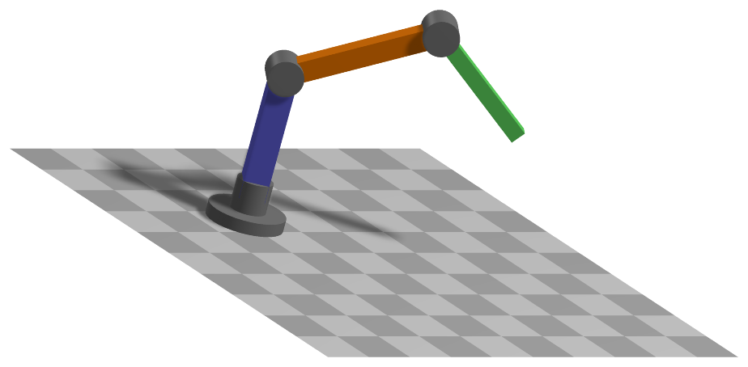

ObjectKinematicTree
A special object to represent open kinematic trees using minimal coordinate formulation. The kinematic tree is defined by lists of joint types, parents, inertia parameters (w.r.t. COM), etc. per link (body) and given joint (pre) transformations from the previous joint. Every joint / link is defined by the position and orientation of the previous joint and a coordinate transformation (incl. translation) from the previous link’s to this link’s joint coordinates. The joint can be combined with a marker, which allows to attach connectors as well as joints to represent closed loop mechanisms. Efficient models can be created by using tree structures in combination with constraints and very long chains should be avoided and replaced by (smaller) jointed chains if possible. The class Robot from exudyn.robotics can also be used to create kinematic trees, which are then exported as KinematicTree or as redundant multibody system. Use specialized settings in VisualizationSettings.bodies.kinematicTree for showing joint frames and other properties.


Simpler: mbs.CreateKinematicTree adds this item, with what it needs, in one call.
Interface
Python names:
ObjectKinematicTreeorKinematicTree, andVKinematicTreefor its visualizationNodes it takes: Node1D, NodeGenericODE2, NodePointGround
Body markers that can be placed on it: MarkerKinematicTreeRigid
Parameters
The parameters of the item; in a dictionary, its type is ‘KinematicTree’:
name |
type |
size |
default |
description |
|---|---|---|---|---|
name |
String |
‘’ |
objects’s unique name |
|
nodeNumber |
NodeIndex |
invalid (-1) |
(symbol: \(n_0 \in \Ncal^n\)) node number (type NodeIndex) of GenericODE2 node containing the coordinates for the kinematic tree; \(n\) being the number of minimal coordinates |
|
gravity |
Vector3D |
3 |
[0.,0.,0.] |
(symbol: \(\LU{0}{\gv} \in \Rcal^{3}\)) gravity vector in inertial coordinates; used to simply apply gravity as LoadMassProportional is not available for KinematicTree |
baseOffset |
Vector3D |
3 |
[0.,0.,0.] |
(symbol: \(\LU{0}{\pv_b} \in \Rcal^{3}\)) offset vector for base, in global coordinates |
jointTypes |
JointTypeList |
[] |
(symbol: \(\jv_T \in \Ncal^{n}\)) joint types of kinematic Tree joints, using exu.JointType, like exu.JointType.RevoluteZ; must be always set |
|
linkParents |
ArrayIndex |
[] |
(symbol: \(\iv_p = [p_0,\, p_1,\, \ldots] \in \Ncal^{n}\)) index of parent joint/link; if no parent exists, the value is \(-1\); by default, \(p_0=-1\) because the \(i\)th parent index must always fulfill \(p_i<i\); must be always set |
|
jointTransformations |
Matrix3DList |
[] |
(symbol: \(\Tm = [\LU{p_0,j_0}{\Tm_0},\, \LU{p_1,j_1}{\Tm_1},\, \ldots ] \in [\Rcal^{3 \times 3}, ...]\)) list of constant joint transformations from parent joint coordinates \(p_0\) to this joint coordinates \(j_0\); this allows to adjust the orientation of the joint axes (but it does not affect the joint offset); if no parent exists (\(-1\)), the base coordinate system \(0\) is used; must be always set |
|
jointOffsets |
Vector3DList |
[] |
(symbol: \(\Vm = [\LU{p_0}{o_0},\, \LU{p_1}{o_1},\, \ldots ] \in [\Rcal^{3}, ...]\)) list of constant joint offsets from parent joint to this joint; \(p_0\), \(p_1\), \(\ldots\) denote the parent coordinate systems; this means that the joint offset is added prior to performing the joint transformation; if no parent exists (\(-1\)), the base coordinate system \(0\) is used; must be always set |
|
jointHTs |
HomogeneousTransformationList |
None |
(symbol: \([\LU{p_0,j_0}{\Hm_0},\, \LU{p_1,j_1}{\Hm_1},\, \ldots ]\)) the joint transformations and the joint offsets at once, as a list of homogeneous transformations from the parent joint to this joint - \(\Hm_i\) with the rotation \(\Tm_i\) and the translation \(\LU{p_i}{o_i}\), each a 4x4 matrix, its 16 values or an exu.HT; None: not given; given together with jointTransformations or jointOffsets, they must agree |
|
linkInertiasCOM |
Matrix3DList |
[] |
(symbol: \(\Jm_{COM} = [\LU{j_0}{\Jm_0},\, \LU{j_1}{\Jm_1},\, \ldots ] \in [\Rcal^{3 \times 3}, ...]\)) list of link inertia tensors w.r.t. COM in joint/link \(j_i\) coordinates; must be always set |
|
linkCOMs |
Vector3DList |
[] |
(symbol: \(\Cm = [\LU{j_0}{\cv_0},\, \LU{j_1}{\cv_1},\, \ldots ] \in [\Rcal^{3}, ...]\)) list of vectors for center of mass (COM) in joint/link \(j_i\) coordinates; must be always set |
|
linkMasses |
Vector |
[] |
(symbol: \(\mv \in \Rcal^{n}\)) masses of links; must be always set |
|
linkForces |
Vector3DList |
[] |
(symbol: \(\LU{0}{\Fm} \in [\Rcal^{3}, ...]\)) list of 3D force vectors per link in global coordinates acting on joint frame origin; use force-torque couple to realize off-origin forces; defaults to empty list \([]\), adding no forces |
|
linkTorques |
Vector3DList |
[] |
(symbol: \(\LU{0}{\Fm_\tau} \in [\Rcal^{3}, ...]\)) list of 3D torque vectors per link in global coordinates; defaults to empty list \([]\), adding no torques |
|
jointForceVector |
Vector |
[] |
(symbol: \(\fv \in \Rcal^{n}\)) generalized force vector per coordinate added to RHS of EOM; represents a torque around the axis of rotation in revolute joints and a force in prismatic joints; for a revolute joint \(i\), the torque \(f[i]\) acts positive (w.r.t. rotation axis) on link \(i\) and negative on parent link \(p_i\); must be either empty list/array \([]\) (default) or have size \(n\) |
|
jointPositionOffsetVector |
Vector |
[] |
(symbol: \(\uv_o \in \Rcal^{n}\)) offset for joint coordinates used in P(D) control; acts in positive joint direction similar to jointForceVector; should be modified, e.g., in preStepUserFunction; must be either empty list/array \([]\) (default) or have size \(n\) |
|
jointVelocityOffsetVector |
Vector |
[] |
(symbol: \(\vv_o \in \Rcal^{n}\)) velocity offset for joint coordinates used in (P)D control; acts in positive joint direction similar to jointForceVector; should be modified, e.g., in preStepUserFunction; must be either empty list/array \([]\) (default) or have size \(n\) |
|
jointPControlVector |
Vector |
[] |
(symbol: \(\Pm \in \Rcal^{n}\)) proportional (P) control values per joint (multiplied with position error between joint value and offset \(\uv_o\)); note that more complicated control laws must be implemented with user functions; must be either empty list/array \([]\) (default) or have size \(n\) |
|
jointDControlVector |
Vector |
[] |
(symbol: \(\Dm \in \Rcal^{n}\)) derivative (D) control values per joint (multiplied with velocity error between joint velocity and velocity offset \(\vv_o\)); note that more complicated control laws must be implemented with user functions; must be either empty list/array \([]\) (default) or have size \(n\) |
|
forceUserFunction |
ObjectKinematicTreeForceUserFunction |
0 |
(symbol: \(\fv_{user} \in \Rcal^{n}\)) A Python user function which computes the generalized force vector on RHS with identical action as jointForceVector; see description below |
|
visualization |
VObjectKinematicTree |
parameters for visualization of item |
Visualization parameters
The parameters of VObjectKinematicTree, given as visualization:
name |
type |
size |
default |
description |
|---|---|---|---|---|
show |
Bool |
True |
set true, if item is shown in visualization and false if it is not shown |
|
showLinks |
Bool |
True |
set true, if links shall be shown; if graphicsDataList is empty, a standard drawing for links is used (drawing a cylinder from previous joint or base to next joint; size relative to frame size in KinematicTree visualization settings); else graphicsDataList are used per link; NOTE visualization of joint and COM frames can be modified via visualizationSettings.bodies.kinematicTree |
|
showJoints |
Bool |
True |
set true, if joints shall be shown; if graphicsDataList is empty, a standard drawing for joints is used (drawing a cylinder for revolute joints; size relative to frame size in KinematicTree visualization settings) |
|
color |
Float4 |
4 |
[-1.,-1.,-1.,-1.] |
RGBA color for object; 4th value is alpha-transparency; R=-1.f means, that default color is used |
graphicsDataList |
BodyGraphicsDataList |
Structure contains data for link/joint visualization; data is defined as list of BodyGraphicsData where every BodyGraphicsData corresponds to one link/joint; must either be emtpy list or length must agree with number of links |
Drawing
Drawn as all super elements; per link its graphicsDataList in the link frame; a link without graphics data as a cylinder from the previous joint with showLinks, and its revolute axis as a cylinder with showJoints; the frames of the joints and of the centers of mass with bodies.kinematicTree.showJointFrames and showCOMframes, of size frameSize.
Settings beyond those of all super elements: bodies.kinematicTree.frameSize, bodies.kinematicTree.showCOMframes, bodies.kinematicTree.showFramesNumbers, bodies.kinematicTree.showJointFrames, general.cylinderTiling.
Output variables
Available as OutputVariableType in sensors, Get...Output() and other functions:
output variable |
symbol |
description |
|---|---|---|
Coordinates |
all ODE2 joint coordinates, including reference values (which is slightly inconsistent with CoordinatesTotal used in nodes); if you need values without reference part, read out the node; these are the minimal coordinates of the object |
|
Coordinates_t |
all ODE2 velocity coordinates |
|
Coordinates_tt |
all ODE2 acceleration coordinates |
|
Force |
generalized forces for all coordinates (residual of all forces except mass*accleration; corresponds to ComputeODE2LHS) |
|
KineticEnergy |
\(T = \frac{1}{2} \dot\qv\tp \Mm\, \dot\qv\) |
kinetic energy from the mass matrix of the current state and the velocities of the nodes; current configuration only; localPosition must be \([0,0,0]\) |
PotentialEnergy |
\(V = \sum_i \frac{1}{2} P_i (q_i - q_{\mathrm{off},i})^2 - f_i\, (q_i - q_{\mathrm{ref},i}) - m_i\, \gv\tp (\pv_{\mathrm{COM},i} - \pv_{\mathrm{COM},i,\mathrm{ref}})\) |
the springs of the P control (where jointPositionOffsetVector is given), the constant joint forces and the built-in gravity on the centers of mass of the links; the D control dissipates; raises for a forceUserFunction; localPosition must be \([0,0,0]\) |
Detailed description
SensorKinematicTree output variables
The following output variables are available with SensorKinematicTree for a specific link.
Within the link \(n_i\), a local position \(\LU{n_i}{\pv_{n_i}}\) is required. All output variables are available for different
configurations. Furthermore, \(\LU{0,n_i}{\Tm}\) is the homogeneous transformation from link \(n_i\) coordinates to global coordinates.
Kinematic tree output variables |
symbol |
description |
|---|---|---|
Position |
\(\LU{0}{\pv_{n_i}} = \LU{0,n_i}{\Tm} \LU{n_i}{\pv_{n_i}}\) |
global position of local position at link \(n_i\) |
Displacement |
\(\LU{0}{\uv_{n_i}} = \LU{0,n_i}{\Tm} \LU{n_i}{\pv_{n_i}} - \LU{0}{\pv_{n_i,\cRef}}\) |
global displacement of local position at link \(n_i\) |
Rotation |
\(\tphi_{n_i}\) |
Tait-Bryan angles of link \(n_i\) |
RotationMatrix |
\(\LU{0,n_i}{\Rot_{n_i}}\) |
rotation matrix of link \(n_i\) |
VelocityLocal |
\(\LU{n_i}{\vv_{n_i}}\) |
local velocity of local position at link \(n_i\) |
Velocity |
\(\LU{0}{\vv_{n_i}} = \LU{0,n_i}{\dot\Tm} \LU{n_i}{\pv_{n_i}}\) |
global velocity of local position at link \(n_i\) |
VelocityLocal |
\(\LU{n_i}{\vv_{n_i}}\) |
local velocity of local position at link \(n_i\) |
Acceleration |
\(\LU{0}{\av_{n_i}} = \LU{0,n_i}{\dot\Tm} \LU{n_i}{\pv_{n_i}}\) |
global acceleration of local position at link \(n_i\) |
AccelerationLocal |
\(\LU{n_i}{\av_{n_i}}\) |
local acceleration of local position at link \(n_i\) |
AngularVelocity |
\(\LU{0}{\tomega_{n_i}}\) |
global angular velocity of local position at link \(n_i\) |
AngularVelocityLocal |
\(\LU{n_i}{\tomega_{n_i}}\) |
local angular velocity of local position at link \(n_i\) |
AngularAcceleration |
\(\LU{0}{\talpha_{n_i}}\) |
global angular acceleration of local position at link \(n_i\) |
AngularAccelerationLocal |
\(\LU{n_i}{\talpha_{n_i}}\) |
local angular acceleration of local position at link \(n_i\) |
General notes
The KinematicTree object is used to represent the equations of motion of a (open) tree-structured multibody system
using a minimal set of coordinates. Even though that Exudyn is based on redundant coordinates,
the KinematicTree allows to efficiently model standard multibody models based on revolute and prismatic joints.
Especially, a chain with 3 links leads to only 3 equations of motion, while a redundant formulation would lead
to \(3 \times 7\) coordinates using Euler Parameters and \(3 \times 6\) constraints for joints and Euler parameters,
which gives a set of 39 equations. However this set of equations is very sparse and the evaluation is much faster
than the kinematic tree.
The question, which formulation to chose cannot be answered uniquely. However, KinematicTree objects
do not include constraints, so they can be solved with explicit solvers. Furthermore, the joint values (angels)
can be addressed directly – controllers or sensors are generally simpler.
General
The equations follow the description given in Chapters 2 and 3 in the handbook of robotics, 2016 edition Siciliano2016.
Functions like GetObjectOutputSuperElement(...), see MainSystem: Object,
or SensorSuperElement, see MainSystem: Sensor, directly access special output variables
(OutputVariableType) of the (mesh) nodes of the superelement. The mesh nodes are the links of the
KinematicTree.
Note, however, that some functionality is considerably different for ObjectGenericODE2.
Equations of motion
The KinematicTree has one node of type NodeGenericODE2 with \(n\) coordinates.
The equations of motion are built by special multibody algorithms, following Featherstone Featherstone2008. For a short introduction into this topic, see Chapter 3 of Siciliano2016.
The kinematic tree defines a set of rigid bodies connected by joints, having no loops. In this way, every body \(i\), also denoted as link, has either a previous body \(p(i) \neq \mathrm{-1}\) or not. The previous body for body \(i\) is \(p(i)\). The coordinates of joint \(i\) are defined as \(q_i\).
The following joint transformations are considered (as homogeneous transformations):
\(\Xm_J(i)\) \(\ldots\) joint transformation due to rotation or translation
\(\Xm_L(i)\) \(\ldots\) link transformation (e.g. given by kinematics of mechanism)
\(\LU{i,\mathrm{-1}}{\Xm}\) \(\ldots\) transformation from global (-1) to local joint \(i\) coordinates
\(\LU{i,p(i)}{\Xm}\) \(\ldots\) transformation from previous joint to joint \(i\) coordinates
Furthermore, we use
\(\tPhi_i\) \(\ldots\) motion subspace for joint \(i\)
which denotes the transformation from joint coordinate (scalar) to rotations and translations. We can compute the local joint angular velocity \(\tomega_i\) and translational velocity \(\wv_i\), as a 6D vector \(\vv^J_i\), from
The joint coordinates, which can be rotational or translational, are stored in the vector
and the vector of joint velocity coordinates reads
Knowing the motion subspace \(\tPhi_i\) for joint \(i\), the velocity of joint \(i\) reads
and accelerations follow as
Note that the previous formulas can be interpreted coordinate free, but they are usually implemented in joint coordinates.
The local forces due to applied forces and inertia forces are computed, for now independently, for every link,
The total forces can be computed from inverse dynamics. At every free end of the tree, the forces are added up for the previous link, which needs to be done recursively starting at the leaves of the tree,
The mass matrix is then built by recursively computing the intertia of the links and adding the joint contributions by projecting the local inertia into the joint motion space, see the composite-rigid-body algorithm.
Note that \(\cdot\) for multiplication of matrices and vectors is added for clarity, especially in case of left and right indices. The whole algorithm for forward and inverse dynamics is given in the following figures.
Recursive Newton-Euler algorithm (acc. to Featherstone). It returns the joint forces \(\tau\) for given \(\qv\), \(\dot \qv\), \(\mathrm{MotionSubspace}(i)\), \(\Xm_{L}\) and \(\LU{\mathrm{-1}}{\fv}^a_i\), assuming \(\dot\tPhi_i=0\):
start with \(\vv_{\mathrm{-1}} = \Null\) and \(\av_{\mathrm{-1}} = -\gv\), the gravity vector.
Forward pass over the \(N_B\) bodies, \(i=0\) to \(N_B-1\): the transformations \(\Xm_J(i) = \Xm_{JT}(i, q_i)\), \(\LU{i,p(i)}{\Xm} = \Xm_J(i) \, \Xm_{L}(i)\) and \(\tPhi_i = \mathrm{MotionSubspace}(i)\), with \(\LU{i,\mathrm{-1}}{\Xm} = \LU{i,p(i)}{\Xm} \cdot \LU{p(i),\mathrm{-1}}{\Xm}\) if \(p(i) \neq \mathrm{-1}\); then the kinematics \(\vv_i = \vv_{p(i)} + \tPhi_i \, \dot q_i\) and \(\av_i = \av_{p(i)} + \vv_i \times \tPhi_i \, \dot q_i\), where \(\tPhi_i \, \ddot q_i\) is put on the right hand side; then the forces \(\fv_i = \Im_i \av_i + \vv_i \times \Im_i \vv_i - \LU{i,\mathrm{-1}}{\Xm\tp} \!\cdot\! \LU{\mathrm{-1}}{\fv}^a_i\).
Backward pass, \(i=N_B-1\) down to \(0\): the joint force (torque) \(\tau_i = \tPhi_i\tp \cdot \fv_i\), and \(\fv_{p(i)} \mathrel{+}= \LU{i,p(i)}{\Xm\tp} \fv_i\) if \(p(i) \neq \mathrm{-1}\).
Composite-rigid-body algorithm (acc. to Featherstone). It returns the mass matrix \(\Mm\) for given \(\tPhi_i\), \(\LU{i,p(i)}{\Xm}\) and \(\Im_i\):
start with \(\Mm_0 = \Null\) and the 6D inertia tensors \(\Im_i^C = \Im_i\) for every body.
Recursively update the inertias, \(i=N_B-1\) down to \(0\): project the inertia into the motion subspace, \(\Fm = \Im_i^C \, \tPhi_i\) and \(\Mm_{ii} = \tPhi_i\tp \, \Fm\); add it to the parent, \(\Im_{p(i)}^C \mathrel{+}= \LU{i,p(i)}{\Xm\tp} \cdot \Im_i^C \cdot \LU{i,p(i)}{\Xm}\), if \(p(i) \neq \mathrm{-1}\).
The mass matrix terms of the same pass: with \(j=i\), while \(p(j) \neq \mathrm{-1}\), set \(\Fm = \LU{j,p(j)}{\Xm\tp} \cdot \Fm\), \(j = p(j)\), \(\Mm_{ij} = \Fm\tp \, \tPhi_i\) and \(\Mm_{ji} = \Mm_{ij}\).
Implementation and user functions
Currently, there is only the so-called Composite-Rigid-Body (CRB) algorithm implemented. This algorithm does not show the highest performance, but creates the mass matrix \(\Mm_{CRB}\) and forces \(\fv_{CRB}\) in a conventional form. The equations read
The term \(\fv_{CRB}(\qv,\dot \qv)\) represents inertial terms, which are due to accelerations and
quadratic velocities and is computed by ComputeODE2LHS.
Note that the user function \(\fv_{user}(mbs, t, i_N,\qv,\dot \qv)\) may be empty (=0),
and iN represents the itemNumber (=objectNumber).
The force \(\fv\) is given by the jointForceVector, which also may have zero length, causing it to be ignored.
While \(\fv\) is constant, it may be varied using a mbs.preStepUserFunction, which can
then represent any force over time. Note that such changes are not considered in the object’s jacobian.
The user force \(\fv_{user}\) is described below and may represent any force over time. Note that this force is considered in the object’s jacobian, but it does not include external dependencies – if a control law is feeds back measured quantities and couples them to forces. This leads to worse performance (up to non-convergence) of implicit solvers.
The control force \(\fv_{PD}\) realizes a simple linear control law
Here, the ‘.’ operator represents an element-wise multiplication of two vectors, resulting in a vector. The force \(\fv_{PD}\) at the RHS acts in direction of prescribed joint motion \(\uv_o\) and prescribed joint velocities \(\vv_o\) multiplied with proportional and ‘derivative’ factors \(P\) and \(D\). Omitting \(\uv_o\) and \(\vv_o\) and putting \(\fv_{PD}\) on the LHS, we immediately can interpret these terms as stiffness and damping on the single coordinates. The control force is also considered in the object’s jacobian, which is currently computed by numerical differentiation.
More detailed equations will be added later on. Follow exactly the description (and coordinate systems) of the object parameters, especially for describing the kinematic chain as well as the inertial parameters.
Marker interfaces
The tree has one marker of its own, MarkerKinematicTreeRigid: a link \(n_l\) and a local position in
the frame of that link, with position, orientation and their Jacobians with respect to the joint
coordinates. Loads and connectors act on the tree through it; forces and torques on the joints
themselves are the object’s own parameters. A joint coordinate can also be reached with
MarkerNodeCoordinate on the NodeGenericODE2 of the tree. The general body markers and the super
element markers do not work on this object: Assemble() refuses them.
Userfunction: forceUserFunction(mbs, t, itemNumber, q, q_t)
A user function, which computes a force vector applied to the joint coordinates depending on current time and states of object.
Note that itemNumber represents the index of the ObjectKinematicTree object in mbs, which can be used to retrieve additional data from the object through
mbs.GetObjectParameter(itemNumber, ...), see the according description of GetObjectParameter.
arguments / return |
type or size |
description |
|---|---|---|
|
MainSystem |
provides MainSystem mbs to which object belongs |
|
Real |
current time in mbs |
|
Index |
integer number \(i_N\) of the object in mbs, allowing easy access to all object data via mbs.GetObjectParameter(itemNumber, …) |
|
Vector \(\in \Rcal^n\) |
object coordinates (e.g., nodal displacement coordinates) in current configuration, without reference values |
|
Vector \(\in \Rcal^n\) |
object velocity coordinates (time derivative of |
return value |
Vector \(\in \Rcal^{n}\) |
returns force vector for object |
Mini example
#build 1R mechanism (pendulum)
L = 1 #length of link
RBinertia = InertiaCuboid(1000, [L,0.1*L,0.1*L])
inertiaLinkCOM = RBinertia.InertiaCOM() #KinematicTree requires COM inertia
linkCOM = np.array([0.5*L,0.,0.]) #if COM=0, gravity does not act on pendulum!
linkCOMs=exu.Vector3DList([linkCOM])
linkInertiasCOM=exu.Matrix3DList([inertiaLinkCOM])
nGeneric = mbs.AddNode(NodeGenericODE2(referenceCoordinates=[0.],initialCoordinates=[0.],
initialCoordinates_t=[0.],numberOfODE2Coordinates=1))
oKT = mbs.AddObject(ObjectKinematicTree(nodeNumber=nGeneric, jointTypes=[exu.JointType.RevoluteZ], linkParents=[-1],
jointHTs=[exu.HT()], linkInertiasCOM=linkInertiasCOM, #the joint frame is the base frame
linkCOMs=linkCOMs, linkMasses=[RBinertia.mass],
baseOffset = [0.5,0.,0.], gravity=[0.,-9.81,0.]))
#assemble and solve system for default parameters
mbs.Assemble()
simulationSettings = exu.SimulationSettings() #takes currently set values or default values
simulationSettings.timeIntegration.numberOfSteps = 1000 #gives very accurate results
mbs.SolveDynamic(simulationSettings , solverType=exu.DynamicSolverType.RK67) #highly accurate!
#check final value of angle:
q0 = mbs.GetNodeOutput(nGeneric, exu.OutputVariableType.Coordinates)
#exu.Print(q0)
exu.sys['testResult'] = q0 #-3.134018551808591; RigidBody2D with 2e6 time steps gives: -3.134018551809384
Relevant Examples (Ex) and TestModels (TM) with weblink to github: kinematicTreeAndMBS.py (Ex), reinforcementLearningRobot.py (Ex), stiffFlyballGovernorKT.py (Ex), energiesFlexibleBodiesTest.py (TM), kinematicTreePrismaticJacobianTest.py (TM), kinematicTreeTest.py (TM), kinematicTreeUserFunctionTest.py (TM), createKinematicTreeTest.py (TM)